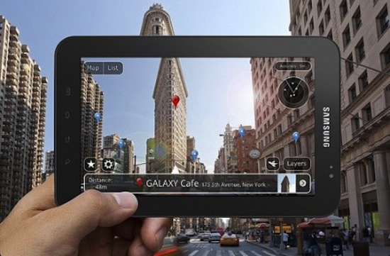

La réalité virtuelle a pour finalité d'immerger les utilisateurs dans un monde artificiel tri-dimensionnel créé numériquement. Une activité sensori-motrice et cognitive permet à aux utilisateurs d'interragir avec le monde virtuel. C'est un monde virtuel qui est représenté à l'utilisateur par conséquent l'environnement doit être géométriquement cohérent selon l'angle de vue et la position de l'utilisateur. C'est ainsi que par un système de capture de position du visiteur, la perspective est recalculée en temps réel pour respecter son point de vue.
La réalité virtuelle a pour finalité d'immerger les utilisateurs dans un monde artificiel tri-dimensionnel créé numériquement. Une activité sensori-motrice et cognitive permet à aux utilisateurs d'interragir avec le monde virtuel. C'est un monde virtuel qui est représenté à l'utilisateur par conséquent l'environnement doit être géométriquement cohérent selon l'angle de vue et la position de l'utilisateur. C'est ainsi que par un système de capture de position du visiteur, la perspective est recalculée en temps réel pour respecter son point de vue.
A la différence de la réalité virtuelle, la réalité augmentée désigne les systèmes informatiques qui rendent possible la superposition d'un modèle virtuel 2D ou 3D à la
perception que nous avons naturellement de la réalité et ceci en temps réel. Elle désigne les différentes méthodes qui permettent d'incruster de façon réaliste des objets
virtuels dans une séquence d'images. C'est ainsi que les Microsoft Hololens et
Google Glass sont répertoriés dans la catégorie des dispositifs de réalité augmenté.

De nos jours, il existe deux types de casques de réalité virtuelle sur le marché:
1. Des accessoires tel que le Google Cardboard et le Samsung Galaxy VR qui permettent de brancher le smartphone à l'intérieur du casque afin de l'utiliser comme écran.
Ces accessoires utilisent le gyroscope et l'accéléromètre de la caméra du smartphone pour repérer les mouvements de la tête de l'utilisateur.
2. Des unités autonomes tel que l'Oculus Rift et le HTC Vive qui disposent en son sein d'un écran, d'un gyroscope, d'un accéléromètre et de capteurs qui traquent les
mouvements de la tête de l'utilisateur.